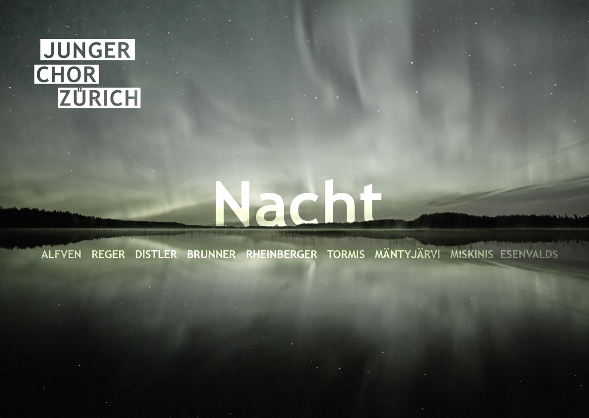

Der Junge Chor Zürich singt Lieder der Nacht. Dabei führt ihn die Reise auf ein spannendes und vielfältig besungenes Feld. Seien es die Dämmerung, die sich langsam über das Land legt, die verheissungsvolle Stunde um Mitternacht, zwielichtige nordische Polarsphären oder sagenhafte Nacht-Kreaturen – die Dunkelheit ist Quelle für viele Sujets, die es zu entdecken lohnt. Nicht nur Dichter und Maler hat sie inspiriert, auch zu einem grossen Schatz an Liedern verschiedener Länder und Kulturen hat sie geführt. Der Junge Chor Zürich bringt Licht in dieses Liedgut und nimmt Sie mit auf eine Nachtwandlung.
Chorkonzert mit Lichtinstallation
Samstag 30. April 2016, 21.30 Uhr
Sonntag 1. Mai 2016, 18.00 Uhr
Junger Chor Zürich
Leitung Lisa Appenzeller
Lichtgestaltung Lilith Gardell
Alte Kirche Wollishofen
Kilchbergsteig 21, 8038 Zürich
Anreise: Tram Nr. 7 oder Bus Nr. 72 bis Haltestelle Morgental
Eintritt Fr. 10.-- plus Kollekte nach Konzert
www.juchz.ch